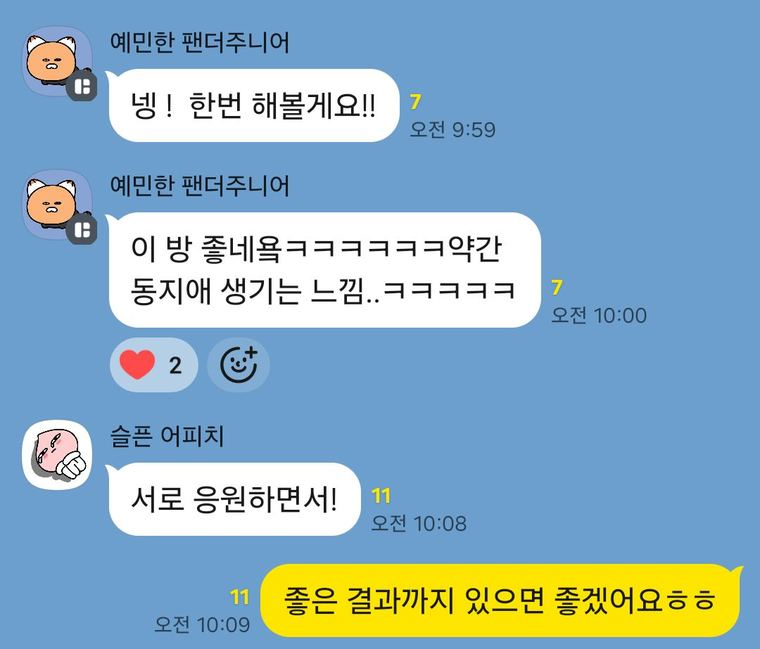
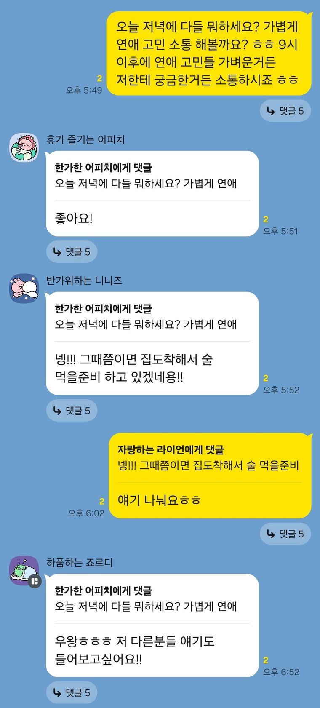
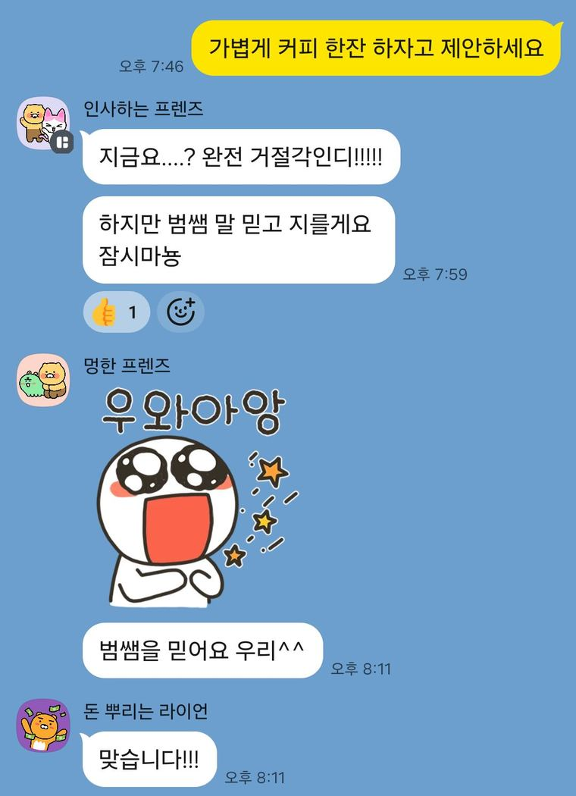
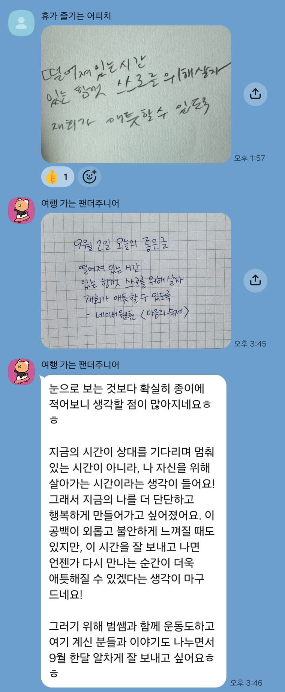
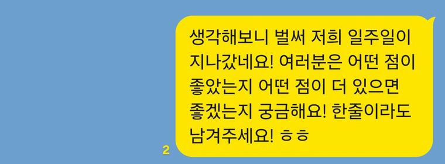
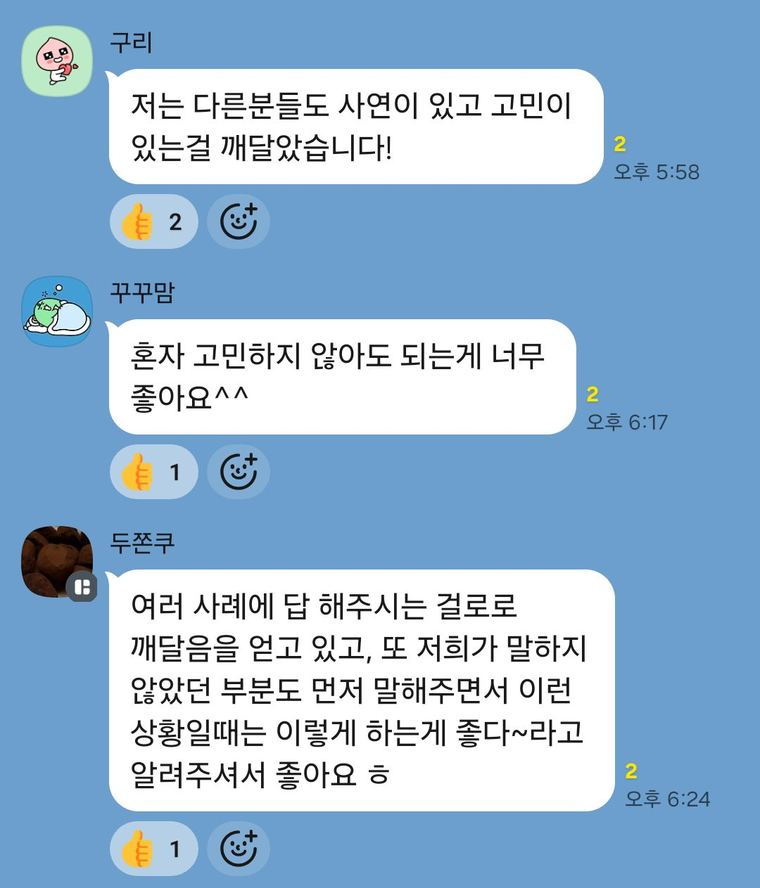
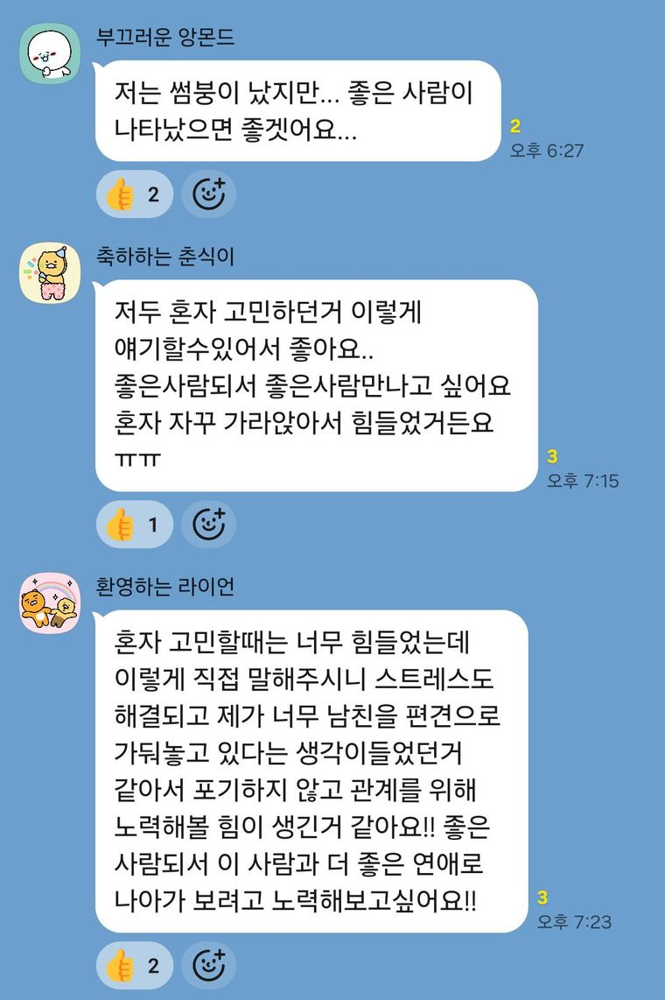
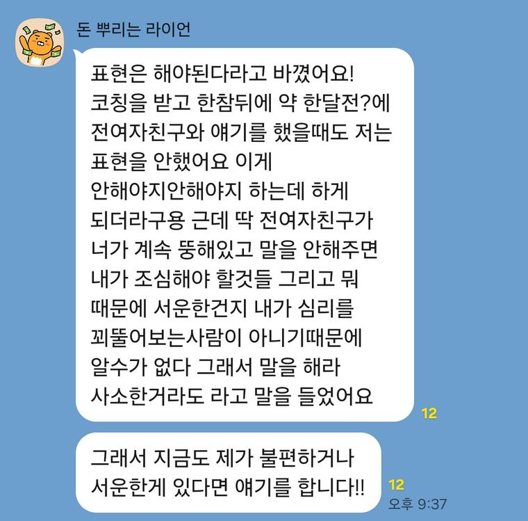
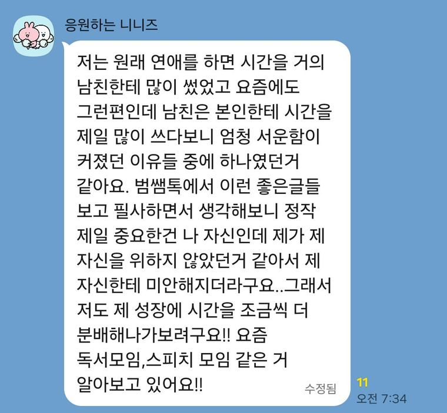
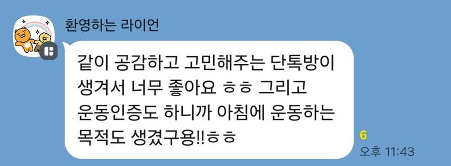

9월에 13명이 한 달을 같이 넘겼습니다.
10월 1일, 2기 시작합니다.
참가비 3만원 · 선착순 20명 · 9월 30일 마감
또 비슷한 사람을 만나고, 또 비슷하게 끝나셨나요? 헤어지고 나면 내가 뭘 잘못했는지만 며칠씩 곱씹고, 그러다 상대 인스타를 하루에 몇 번씩 들어가고 계실지도 모르겠습니다.
보통 이럴 때 우리는 더 잘하려고 합니다. 다음엔 더 참고, 더 맞춰주고, 더 좋은 사람이 되겠다고 다짐하죠. 그런데 그 다짐이 오히려 같은 결과를 만든다는 거, 알고 계셨나요?
문제는 상대가 아니라 내가 어떤 상태에서 연애를 시작하느냐에 있습니다. 자존감이 바닥인 채로 시작한 연애는 상대가 누구든 비슷하게 흘러갑니다.
상담을 하다 보면 나쁜 연애를 붙잡고 있는 분들을 자주 만납니다. 자존감을 다 버려가면서까지요. 그럴 때마다 너무 안타까웠어요.
이 프로젝트를 만든 이유는 딱 하나입니다. 행복한 연애를 하셨으면 하는 바람입니다. 10월에도 그 마음으로 함께합니다.
2기 신청 접수 중
왜 스무 명만 받나요?
1기 때 인스타 스토리로 사전 수요조사를 했더니 100분 이상이 하고 싶다고 신청해주셨습니다. 인원을 늘리면 한 사람 한 사람을 제대로 못 챙깁니다. 그만큼 더 애정을 갖고 함께할 분들만 받으려고 2기도 스무 명으로 유지합니다.
이번엔 다를 줄 알았는데 또 똑같이 끝났어요.
아닌 사람인 걸 알면서도 못 놓겠어요.
연락이 조금만 늦어져도 하루 종일 불안해요.
내가 뭘 잘못했나만 계속 생각해요.
친구들은 다 결혼하는데 나만 제자리 같아요.
3년간 상담하면서 실제로 들었던 말들입니다. 여기엔 공통점이 하나 있어요. 전부 상대가 기준이고 내가 뒷전일 때 나오는 말입니다.
기준을 나에게 되돌려놓지 않으면, 사람만 바뀌고 결과는 똑같습니다.
1기 기록
아래는 1기 오픈채팅방 실제 화면입니다. 전원 별명으로 입장해서 서로의 본명은 아무도 모릅니다.




한 달 구성
매일 아침
아침마다 문장 하나를 보내드립니다. 손으로 따라 쓰고 사진을 올리면 됩니다. 3분이면 끝납니다. 1기에서 제일 반응이 좋았던 게 이겁니다.
30일 12회
카페에 사진만 올리면 됩니다. 헬스장 안 가셔도 됩니다. 산책 20분도 인증됩니다. 몸이 움직이면 마음도 같이 움직입니다.
평일 저녁
연애 얘기를 편하게 나누는 시간입니다. 저도 같이 있습니다. 궁금한 거 물어보셔도 되고, 남들 얘기만 듣고 계셔도 됩니다.
주 1회
범쌤톡 멤버만 보는 글입니다. 머리로는 아는데 왜 마음이 안 따라오는지, 집착을 어떻게 멈추는지 같은 주제를 심리학 근거를 들어 씁니다.
한 달 2회
비공개 라이브 강의 2회. 10월 11일(일)·25일(일) 밤 9시, 강의 40분에 Q&A 40분입니다. 못 보셔도 됩니다. 다시 보실 수 있게 해드립니다.
1기 후기






후기 게시에 동의한 멤버의 대화만 올렸습니다. 별명·프로필은 카카오톡 기본 익명 표시 그대로입니다.
먼저 알려드립니다
이건 1:1 상담에서 합니다.
범쌤톡은 나 스스로 단단해지고 싶은 사람,
나쁜 연애를 반복하고 싶지 않은 사람,
건강하고 행복한 연애를 하고 싶은 사람들이 모이는 곳입니다.
20명이 있는 방에서 한 사람 사연을 파고들면 나머지 19명은 남의 얘기를 구경하게 됩니다. 그래서 개별 상담은 여기서 안 합니다.
정원은 20명이고 선착순으로 채워집니다. 신청서를 쓰신 순서대로 채워지고, 스무 명이 차면 마감돼요.
진행
연애·재회 상담 3년차입니다. 처음엔 돈 벌려고 시작한 일이었는데, 자존감을 버려가며 나쁜 연애를 하는 분들을 계속 만나면서 방향이 잡혔습니다.
상대가 아니라 나한테 초점을 맞추다 보면, 상대가 내 변화를 알게 됩니다. 그리고 그때쯤 되면 오히려 그 사람을 안 만나고 싶어지기도 합니다.
12월 · 오프라인
1기 멤버가 먼저 제안해서 만들어진 자리입니다. 12월에 오프라인으로 모입니다. 강의도 하고, 밥도 먹고, 얘기도 합니다.
한 달 인증 12회를 채운 분들은 할인된 가격으로 오실 수 있습니다.
참가 안내
| 기간 | 10월 1일 ~ 10월 31일 (한 달) |
|---|---|
| 참가비 | 3만원 (1기와 동일) |
| 정원 | 20명 · 선착순 |
| 모집 마감 | 9월 30일 또는 20명 마감 시 |
| 진행 방식 | 카카오톡 오픈채팅방 + 네이버 카페(인증) |
| 입장 | 전원 별명으로 입장합니다. 실명·연락처 공개하지 않습니다. |
| 신청 | 신청서 작성 후 계좌이체 |
| 완주 혜택 | 3기 우선 등록권 + 12월 범쌤미팅 할인 |
방 안에서 나온 이야기는 밖으로 옮기지 않는다는 항목에 전원 동의하고 들어옵니다. 1기도 그렇게 운영했습니다.
아니요. 전원 별명으로 입장합니다. 실명이나 연락처를 공개하지 않고, 프로필도 그대로 두셔도 됩니다. 1기에서도 서로의 본명을 아는 사람은 없었습니다.
30일 동안 12회면 됩니다. 이틀에 한 번꼴도 안 됩니다. 산책 20분, 홈트 15분 다 인증됩니다. 사진 한 장만 올리시면 돼요.
눈팅만 하셔도 됩니다. 1기에도 거의 말씀 안 하시고 조용히 계셨던 분들이 있었는데, 그분들이 오히려 만족하셨어요. 발화 의무는 없습니다.
됩니다. 다만 1기는 여성 비율이 높았습니다.
1시간 재회 상담 수준의 재회 분석이나 상대에게 보낼 메시지 작성은 범쌤톡에서 도와드리지 않습니다. 방 안에서 한 사람 사연에 들어가면 다른 분들 이야기가 묻히거든요. 내 상황을 제대로 뜯어보고 싶으시면 1:1 상담으로 오세요. 거기서는 시간 전부 그것만 봅니다.
한 달 완주 못 하셔도 방에는 계속 계실 수 있습니다. 완주는 12월 범쌤미팅 할인 조건일 뿐이고, 못 채웠다고 뭐라고 하지 않습니다.
10월 한 달, 혼자 보내지 마세요.
같은 시기를 지나는 사람 19명이 옆에 있습니다. 매일 아침 문장이 오고, 저녁엔 얘기할 데가 있습니다. 3만원입니다.
2기 신청하기선착순 20명 · 9월 30일 마감